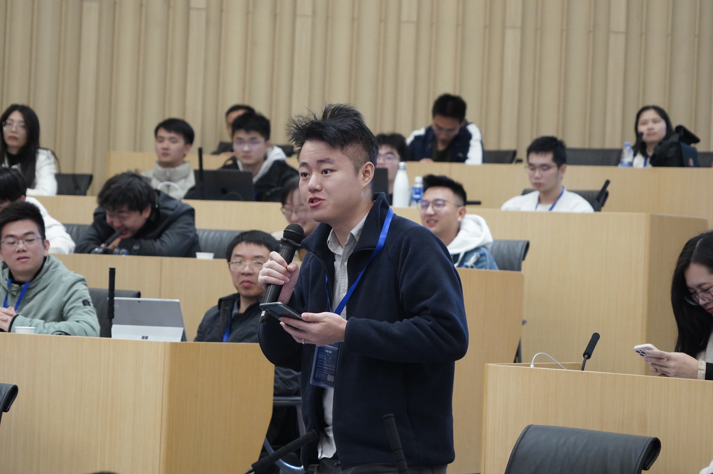

Haihong Xiao 肖海鸿
Lecturer @ Hefei University of Technology (HFUT)
合肥工业大学 计算机与信息学院 讲师
hhxiaowv [at] gmail.com
I am currently a lecturer at the School of Computer Science and Information Engineering, Hefei University of Technology (HFUT). I received my Ph.D. from South China University of Technology (SCUT) in June 2025. From 2023 to 2024, I was a CSC-sponsored visiting Ph.D. student at Nanyang Technological University (NTU), Singapore. My recent research interests focus on 3D computer vision, scene reconstruction, multi-agent systems, and spatial intelligence. Over the past five years, I have published over 20 papers in prestigious venues, including leading journals (IJCV, TIP, TVCG, TMM, TCSVT, TITS) and top-tier conferences (ICCV, ACM MM). I am also a co-inventor of three granted patents. I serve on the Technical Program Committee for Pacific Graphics (PG) 2026. I also serve as a reviewer for leading journals such as IEEE TIP, TVCG, TMM, TCSVT, and TITS, as well as premier conferences like AAAI and ACM MM.
肖海鸿，合肥工业大学计算机与信息学院讲师。2025年6月获得华南理工大学工学博士学位。2023年至2024年，受国家留学基金委（CSC）资助，赴新加坡南洋理工大学进行联合培养。主要研究方向为3D视觉、场景重建、多智能体系统与空间智能。近五年，在国际权威期刊（IJCV、TIP、TVCG、TMM、TCSVT、TITS）及顶级会议（ICCV、ACM MM）上发表论文20余篇，授权发明专利3项。担任Pacific Graphics (PG) 2026会议程序委员会委员。同时担任IEEE TIP、TVCG、TMM、TCSVT、TITS等权威期刊，以及AAAI、ACM MM等知名会议的审稿人。
We welcome self-motivated undergraduate students and prospective Master's students (2027 and later) to join our group. Our research focuses on 3D Computer Vision, Scene Reconstruction, and Spatial Intelligence. Interested students are welcome to contact me via email with their CV and transcript.
欢迎积极主动、对科研感兴趣的本科生，以及计划于2027级及以后加入课题组的硕士研究生联系我们。课题组主要研究方向包括3D视觉、场景重建、多智能体与空间智能。有意向的同学请发送邮件，并附上个人简历与成绩单。
News
- 2026-10 One paper accepted to International Journal of Computer Vision (IJCV)!
- 2026-09 One paper accepted to IEEE Transactions on Multimedia (TMM)!
- 2026-07 One paper accepted to IEEE Transactions on Visualization and Computer Graphics (TVCG)!
- 2026-07 One paper accepted to IEEE Transactions on Circuits and Systems for Video Technology (TCSVT)!
- 2026-07 One paper accepted to ACM International Conference on Multimedia (ACM MM)!
- 2026-05 Invited to serve on the Technical Program Committee for Pacific Graphics (PG) 2026!
- 2025-12 Granted qualification to supervise Master's students!
- 2025-11 One paper accepted to IEEE Transactions on Image Processing (TIP)!
- 2025-11 One paper accepted to IEEE Transactions on Multimedia (TMM)!
- 2025-06 One paper accepted to IEEE Transactions on Circuits and Systems for Video Technology (TCSVT)!
- 2024-12 One paper accepted to IEEE Transactions on Multimedia (TMM)!
- 2024-10 Awarded the 2024 National Scholarship (1st place)!
- 2024-06 One paper accepted to IEEE Transactions on Circuits and Systems for Video Technology (TCSVT)!
- 2023-12 One paper accepted to IEEE Transactions on Intelligent Transportation Systems (TITS)!
- 2023-06 One paper accepted to IEEE/CVF International Conference on Computer Vision (ICCV)!
Publications
(† equal contribution.)
Recent Papers
Professional Activities
Journal Reviewer
- IEEE Transactions on Image Processing (TIP)
- IEEE Transactions on Visualization and Computer Graphics (TVCG)
- IEEE Transactions on Multimedia (TMM)
- IEEE Transactions on Intelligent Transportation Systems (TITS)
- IEEE Transactions on Circuits and Systems for Video Technology (TCSVT)
- IEEE Transactions on Computational Imaging (TCI)
- IEEE Internet of Things Journal (IOTJ)
- Information Fusion (INF)
- Pattern Recognition (PR)
- Neural Networks (NN)
- Knowledge-based Systems (KBS)
- Neurocomputing (NC)
Conference Reviewer
- AAAI Conference on Artificial Intelligence (AAAI)
- ACM International Conference on Multimedia (ACM MM)
- Pacific Graphics (PG)
- Pattern Recognition and Computer Vision (PRCV)
Awards
-
2024National Scholarship (Top 1%, 1st place)
-
2024President's Scholarship, South China University of Technology (Top 5%)
-
2023China Scholarship Council (CSC) Scholarship
-
2023President's Scholarship, South China University of Technology (Top 5%)